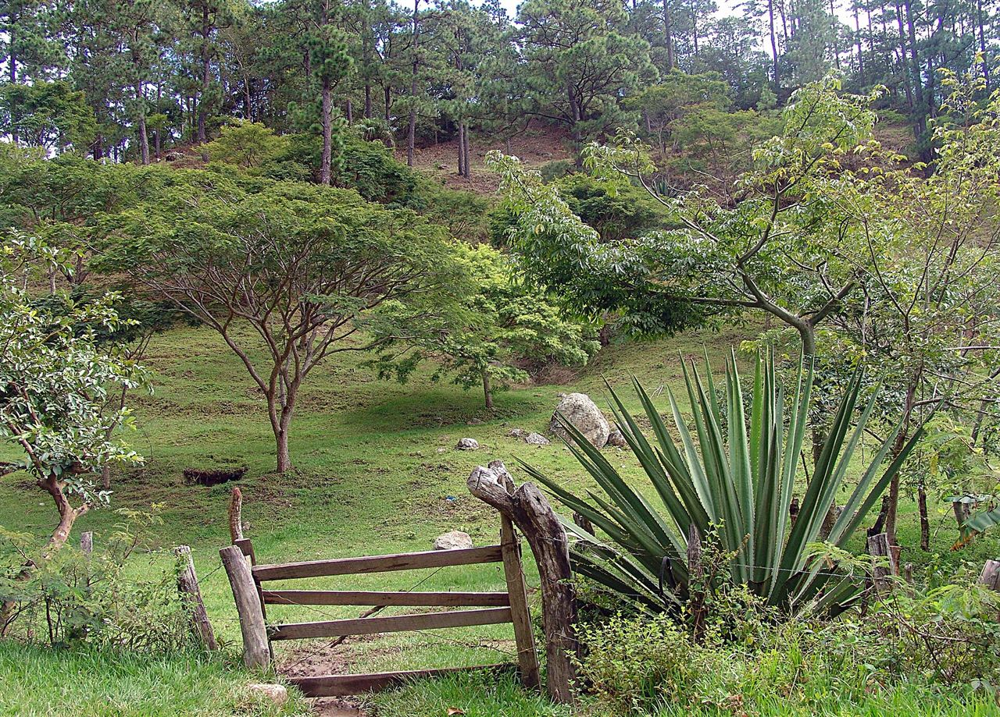
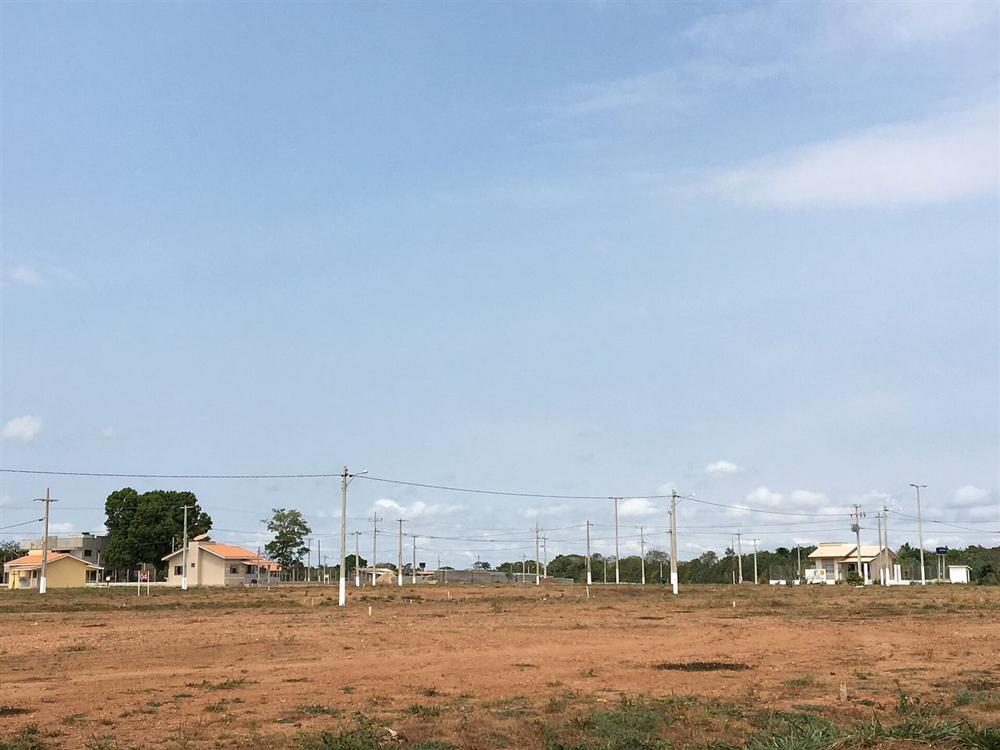
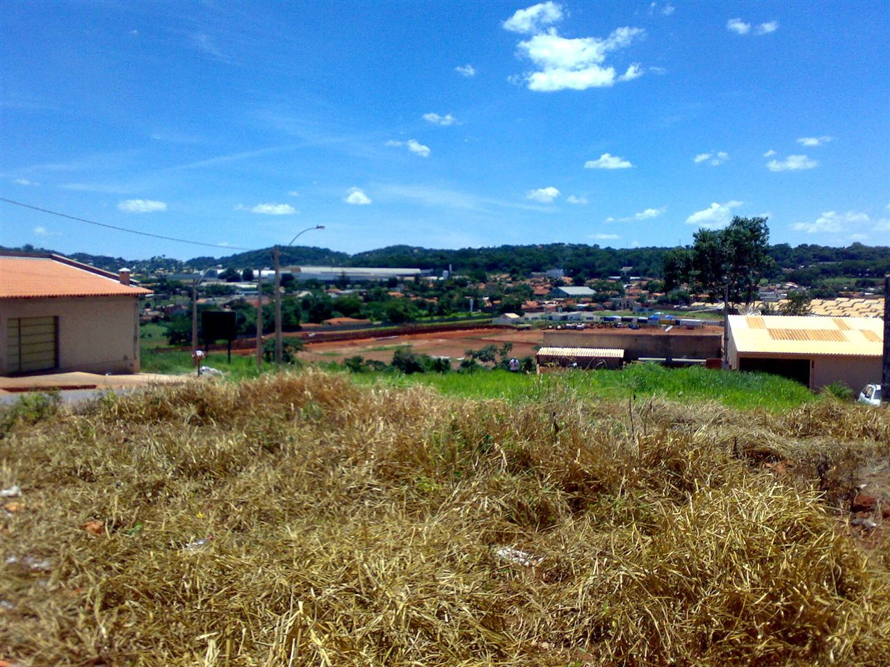
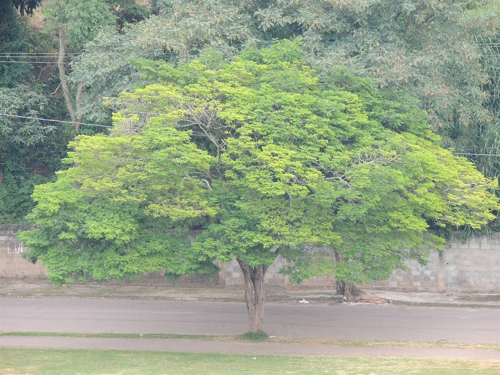
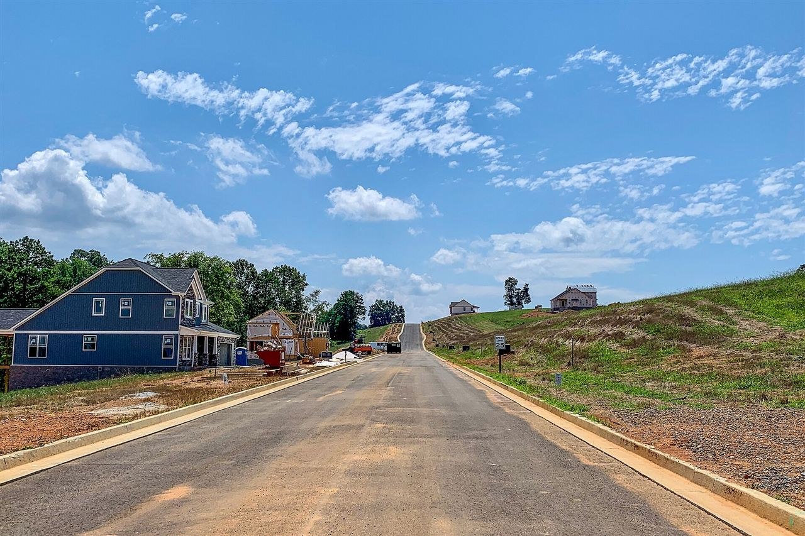
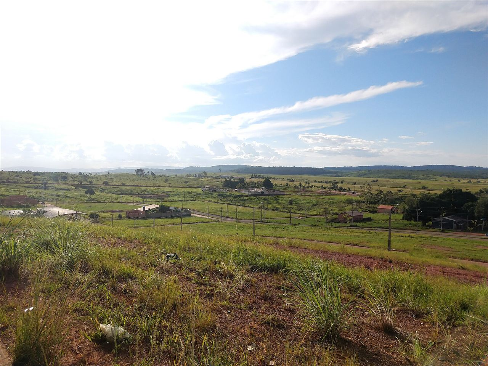
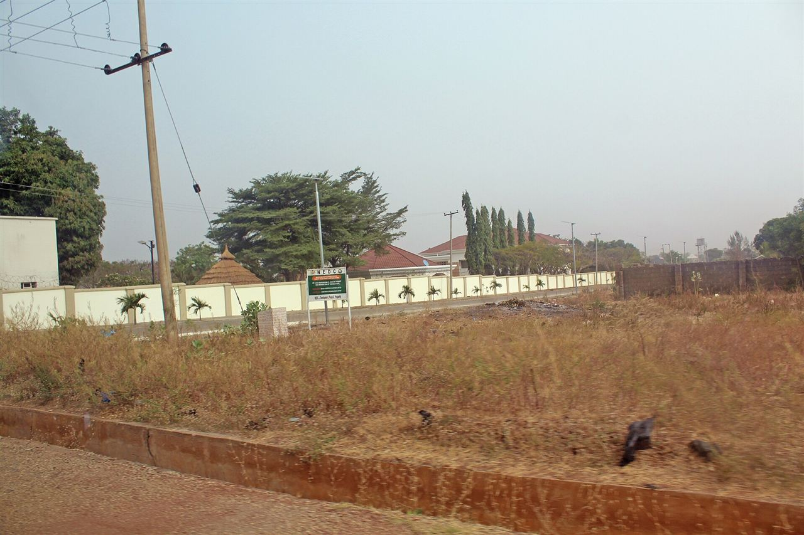

Créditos de fotos
Las fotos de los lotes son de ejemplo y no muestran el terreno del proyecto. Vienen de Wikimedia Commons y se usan según su licencia; aquí se reducen de tamaño, sin otros cambios.
-

HN078sMarcs PasturGate.jpg Public domain -

Loteamento Villa Flora.jpg Autor: Christopher Krause · CC BY-SA 4.0 -

Lote baldio na VS 10, Vale dos Sonhos, Goiânia, janeiro de 2017.jpg Autor: Fronteira · CC BY-SA 4.0 -

Árvore Loteamento Lago Azul. - panoramio.jpg Autor: joao batista Shimoto · CC BY-SA 3.0 -

Bridgewater Point subdivision construction in Morristown, Tennessee.jpg Autor: AppalachianCentrist · CC BY-SA 4.0 -

Loteamento Jardim Eldorado.jpg Autor: Hallel · CC BY-SA 4.0 -

An empty plot of land in GRA Wukari.jpg Autor: Kambai Akau · CC BY-SA 4.0